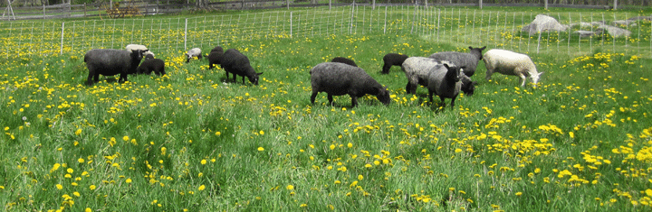
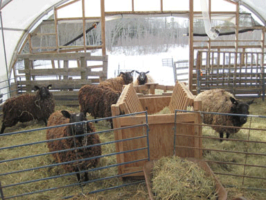
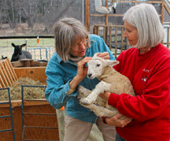
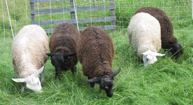
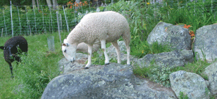
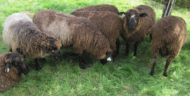
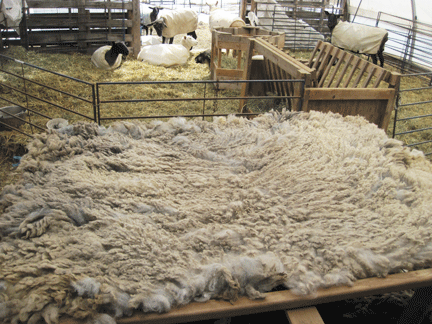

|  | |||||||||||||
|
Starting with Sheep
|
|||||||||||||
| Things to consider before you get sheep:
• Why do you want sheep? |
Choosing a sheep breed Worldwide sheep have been bred for many uses and to thrive in local weather and land conditions. Hair sheep for meat Wool sheep for wool fleeces, pelts Meat sheep for meat and fleece Dairy sheep for milk production All sheep can be used for meat and breeding stock. Management issues to consider: • Hair sheep: shed their coats, no tail docking • Wool sheep: shearing, coating, and marketing/selling of fleece (fine, medium, long wool, double coated, etc.), roving, yarn, finished products, and pelts. • Breeding: access to a ram, or own a ram (or ram group) that you manage separate from your ewes. Do you want registered sheep? • Meat: locate a processor to slaughter, process and package the meat. If you will be reselling meat it must be a USDA approved facility. For custom sales direct to a customer, it can be a regular processor. • Dairy: breeding and lactation scheduling, milking facilities, regulations, marketing/selling of milk, cheese, other milk products and soap. |
||||||||||||
| A benefit of sheep and their rumination is they improve pastures with their feces and urine. During the winter you get “barn gold”… feces, bedding and wasted hay. Perfect for building soil for gardens and pastures! | |||||||||||||
|  |  | ||||||||||||
| Note: This website is intended to be educational and informative. References to management, equipment, buildings, suppliers, etc. are specific to this small homestead farm. Ideas can be adapted to the resources others have on their own homestead. | |||||||||||||
| Choosing your first sheep. Sheep are a flock animal and need to be in a group, three or more. Choose an experienced breeder who has a management style similar to yours. Depending on your sheep farm plan and experience here are some options: • If you want experience with sheep and fleece, but do not want to breed, buy mid-age ewes or young wethers. No breeding issues. Rams eat much less than pregnant, lactating ewes. • Group of weaned ewe lambs in early-summer.* You would have almost two summers to learn grazing and one winter to organize hay, bedding and barn management before beginning breeding. • Buy healthy, strong yearling ewes in early spring. Because their mothers weaned them and they were not separated from the flock, they have strong immune systems that can withstand the stress of new situations. It is easier to manage a complete grazing rotation, from the first new grass through the entire grazing year. If you did want to get into breeding the first year, they could wait till the next year. • For a flock, buy pregnant ewes in the fall or ewes with lambs in the spring. To do this, your fencing and grazing must be set up, ready-to-go. Lactating ewes have high quality and quantity forage needs. In the fall, you would be breeding the ewes, selling ewe lambs or rams, or sending ram lambs to the butcher. This is a lot of management for the first year. *Lamb stress can be a problem buying weaned lambs in July. Forage quality is down for the summer, parasites are up for the year, weaning stress, separation from flock stress, and heat stress. Plus, you are starting grazing in the middle of the season. |
 | ||||||||||||
| Five ewe lambs (4 months old) I bought in July. | |||||||||||||
|  | |||||||||||||
|  | |||||||||||||
| Ram lambs are friendly and curious. As they mature their hormones increase, and they can be aggressive and dangerous in breeding season. Rams and unbred ewes have large full fleeces as they put all their energy into growing and fleece, and not reproduction. |
|||||||||||||
| The thick fleece of Mr. Blue, the ram, spread out on the skirting table. It is so large it covers the table. | |||||||||||||
| Resources: Natural Sheep Care, Pat Coleby Living with Worms in Organic Sheep Production, Peter Stockdale Organic Livestock Handbook, Canadian Organic Growers The Complete Herbal Handbook for Farm and Stable, Juliette de Baïrcali Levy The Fleece & Fiber Sourcebook, Deborah Robson & Carol Ekarius Grazing: Management-Intensive Grazing, Jim Gerrish Stockman Grass Farmer Magazine ACRES Magazine |
|||||||||||||
|  | |||||||||||||